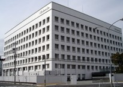
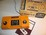
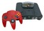
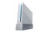
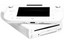
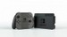
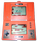

Nintendo
A Nintendo Co. Ltd. (任天堂株式会社, Nintendō Kabushikigaisha?) é uma empresa japonesa fabricante de jogos eletrônicos. Ela é uma das maiores empresas da indústria e também um dos grandes símbolos mundiais devido ao seu sucesso de venda e extenso trabalho na criação de personagens carismáticos com o público.
História
Comumente, supõe-se que o nome "Nintendo" signifique "Deixe a sorte para o céu", mas não há qualquer registro histórico para validar esta suposição.
A Nintendo foi criada por Fusajiro Yamauchi no dia 23 de setembro de 1889 no Japão e fabricava cartões artesanais de um tipo de baralho tradicionalmente japonês chamado Hanafuda. Foi ele próprio que construiu a primeira sede da companhia, em 1917.
Em 1929 Fusajiro se aposentou, deixando a direção do negócio para seu genro, Sekiryo Kaneda, que em 1933 estabeleceu uma Joint venture, rebatizando a empresa para Yamauchi Nintendo and Co..
Em 1949 Kaneda morreu em consequência de um derrame, deixando a presidência da empresa para seu neto, Hiroshi Yamauchi, bisneto de Fusajiro. Já em 1950 ele fez uma parceria com a Disney para produzir cartas estampadas com seus personagens.
Já na década de 1960, Hiroshi Yamauchi tentou obter sucesso em outras áreas: fundou uma rede de TV, uma companhia alimentícia - que tentou vender arroz instantâneo, no estilo do macarrão instantâneo - e até mesmo motéis. Mas Hiroshi não conseguiu obter o sucesso desejado. Com isso as empresas faliram e, ainda por cima, após as Olimpíadas de Tóquio, a venda de baralhos diminuiu, quase levando a Nintendo à falência.
Em meados da década de 1970 a empresa começa a perder mercado para fabricantes de jogos eletrônicos como Bandai e Atari e entra definitivamente neste ramo com a fabricação de pequenos aparelhos eletrônicos equipados com uma tela de cristal liquido, chamados Game & Watch. O então criador Gunpei Yokoi daria início à era digital da empresa que prosseguiria ao longo das décadas de 1970 e 1980, com a fabricação de fliperamas. Mas os fliperamas da Nintendo não emplacavam nos Estados Unidos.
Então, Shigeru Miyamoto, um designer trabalhando desde 1977 na empresa, fora chamado para criar um jogo que pudesse usar os gabinetes do malsucedido Radar Scope. Miyamoto, que não entendia nada de tecnologia, criou um game sobre um marceneiro chamado Jumpman que salvava sua namorada de um gorila. Donkey Kong, lançado em 1981, foi um sucesso, e revelou dois personagens: o gorila-título, e Mario, que se tornaria mascote da empresa.
Após outros arcades bem sucedidos, como Donkey Kong Jr., e Mario Bros., a empresa resolveu investir num console. O Famicom (Family Computer) foi lançado no Japão em 1983, e em 1985 foi lançado nos Estados Unidos com o nome NES (Nintendo Entertainment System). O NES é apontado por "salvar" a indústria de videogames que tinha entrado em crise no ano de 1983, vendendo cerca de 60 milhões de consoles. Com as grandes vendas deste console e dos jogos Super Mario Bros., Metroid, The Legend of Zelda e Kid Icarus a Nintendo consagra-se definitivamente como líder mundial e torna-se símbolo de toda uma geração. Nessa época, muitas pessoas nem mesmo usavam o termo "console", preferindo referir-se a esse tipo de aparelho simplesmente como "Nintendo".
Em 1989, a Nintendo lançou seu primeiro portátil, o Game Boy que deu início a famosa franquia Pokémon com a chegada da Game Freak, e viu um primeiro grande concorrente surgir: a Sega, com seu Mega Drive. Com a Nintendo lançando o Super NES em 1991, as duas empresas lutaram ao longo dos anos 1990 pelo domínio do mercado dos consoles. O Mega Drive reduziria os 90-95% do mercado da Nintendo a meros 35%, mas jogos como Super Mario World, Street Fighter II, The Legend of Zelda: A Link to the Past, Donkey Kong Country e a série Final Fantasy garantiriam o primeiro lugar de volta à Nintendo.
Nintendo  Sede da Nintendo em Quioto Razão social Nintendo Co., Ltd. Nome nativo 任天堂株式会社 Nome romanizado Nintendō Kabushikigaisha Nome(s) Nintendo Karuta Co. Ltd. anterior(es) Nintendo Playing Card Co. Tipo Pública Indústria Jogos eletrônicos Fundação 23 de setembro de 1889 Fundador(es) Fusajiro Yamauchi Sede Quioto, Quioto, Japão Presidente Shuntaro Furukawa Empregados 5.501 (2018) Divisões Entertainment Planning & Development, European Research & Development, Network Service Database,Platform Technology Development, Software Technology Subsidiárias 1-UP Studio, Monolith Soft , Nd Cube, Retro Studios Ativos ¥ 1,634 trilhões (2018) Receita ¥ 1,056 trilhões (2018) LAJIR ¥ 177,557 bilhões (2018) Renda líquida ¥ 139,590 bilhões (2018) |
Em 1995, a Nintendo anunciou seu próximo console, o Nintendo 64, e a Sony, gigante no mundo dos aparelhos eletrônicos, lançou o PlayStation (inicialmente planejado como periférico para o SNES, para ler CDs). Como o console da Sony usava CDs, e o Nintendo 64 mantinha os cartuchos (devido aos seus tempos de loading serem muito menores), a maioria dos fabricantes abandonou a Nintendo para trabalhar com a Sony. O Nintendo 64 foi lançado em 1996 e foi superado pelo PlayStation, ficando em 3° lugar, atrás também do Sega Saturn, mas garantiu a segunda posição nos Estados Unidos.
Em 1996, foi lançado o Game Boy Pocket, versão menor do original, e os primeiros jogos de Pokémon, que garantiram vendas enormes do portátil e viraram uma enorme fonte de lucro para a empresa. Em 1998, foi lançado o Game Boy Color. Neste mesmo ano, morre Gunpei Yokoi num acidente de carro.
Em 2001, a Nintendo lançou o sucessor do N64, o Nintendo GameCube. O console sofreu uma dura concorrência da Sony com o PlayStation 2, e da recém-chegada Microsoft e o seu Xbox. Também em 2001 apareceu o sucessor do Game Boy, o Game Boy Advance, que foi logo substituído pelo Game Boy Advance SP, que revolucionou o mercado por ser o primeiro com luz de fundo (backlight) própria.
A sede da Nintendo Europe
Großostheim, Alemanha.
Em 2004 foi apresentado um novo console portátil, o Nintendo DS, com um conceito inovador: duas telas, sendo uma delas sensível ao toque, como nos Palmtops, que recebeu 3 milhões de pré-encomendas no seu lançamento. Este também sofreu uma dura concorrência com a chegada do portátil da Sony, o PlayStation Portable (mais conhecido como PSP). Em 2005 foi lançada uma versão à parte do Game Boy Advance, o Game Boy Micro.
Na E3 de 2005 a empresa anunciou a sua entrada na nova geração, lançando o seu novo console, com o codinome Revolution. Em 2006, esse Revolution mudou de nome para Wii. Para muitos gerou controvérsia, pois não fazia sentido, mas, com o passar do tempo, as pessoas descobriram que fazia todo o sentido, já que para um não-gamer, ao ouvir esse nome e saber que é um vídeo game, ele saberá que este é bem simples e fácil de jogar. Ao final de 2006, foram lançados o Wii (em 19 de Novembro nos Estados Unidos e em 2 de Dezembro no Japão) e um de seus rivais, um novo membro da velha família PlayStation, o PlayStation 3, que, junto com o Xbox 360 (lançado um ano antes), teria os mais avançados gráficos e som dos vídeo games, mas os tornando caros demais até mesmo para americanos - aproximadamente US$600. A Nintendo, ao contrário, não queria gráficos avançados ainda, mas sim colocar uma nova forma de jogar com o Wii Remote, que acompanha os movimentos dos jogadores e atrair novos gamers para o mercado de vídeo games e, com isso, conseguiu a liderança dos consoles.
Em 2006, a empresa lançou o Nintendo DS Lite, uma versão mais fina do Nintendo DS original.
Em 2008, foi lançada outra versão do Nintendo DS, o Nintendo DSi, que vem mais fino que o Nintendo DS Lite, mas um pouco mais largo, vem também com duas câmeras equivalentes a 3 megapixels, além de sua melhor conexão.
Em 2010, foi anunciado o Nintendo 3DS, um novo portátil com o hardware superior. O novo portátil tem a capacidade de rodar jogos em 3D e sem precisar de óculos especiais para perceber o efeito 3D.
Na E3 de 2011, foi anunciado o Wii U, um novo console, com hardware superior ao Wii, e com uma nova forma de interagir com os jogadores. O destaque em si, não é nem o próprio console que por questão, roda jogos em alta definição (1080i e 1080p) e tem um poder de hardware maior que o dos atuais consoles. O destaque de verdade é o controle, que conta com uma tela de 6.2 polegadas, com touchscreen, giroscópio e acelerômetro.
No início de 2014 o presidente e CEO da empresa, Satoru Iwata, revelou no relatório financeiro anual da Nintendo um novo aparelho, focado na qualidade de vida e saúde e sem ligação com os videogames, que está sendo desenvolvido para explorar um "novo oceano azul" no mercado.
Em 2015 foi anunciado um novo console: o Nintendo NX, para ser lançado em 2017.
Em 2016 foi anunciado através de um vídeo divulgado pela empresa em seu site oficial o nome oficial do sucessor do Wii U. Nintendo Switch é o nome oficial e trata-se de um console híbrido entre portátil e de mesa, tendo também a funcionalidade de um tablet com processador desenvolvido pela NVIDIA. Ele foi lançado em 3 de Março de 2017. Jogos como Super Mario Odyssey, Splatoon 2, Xenoblade 2, e The Legend of Zelda: Breath of the Wild foram anunciados para o Switch e foram lançados em 2017.
Parceria no Brasil (Playtronics)
O Início
A Nintendo chegou nas terras brasileiras através da parceria com as empresas nacionais Gradiente e Estrela que fecharam um acordo com a "Big N" em 1992 formando a Playtronic Industrial em 1993, começando suas operações com o lançamento oficial do Nintendo Entertainment System e do Super Nintendo Entertainment System no Brasil. Foi conturbada a entrada devido a enorme presença da pirataria no Brasil e a adaptação dos consoles às televisões brasileiras (PAL-M) terem o sistema diferente das americanas (NTSC). Em 1996, a Estrela, uma das empresas que cuidava da Playtronic, saiu da empresa por motivos nunca revelados, deixando só para a Gradiente até 2003. A parceria durou até o início de 2003, e foi quebrada devido a tais problemas: um marketing considerado mediano em relação a concorrente local a Sega Brasil que representava a SEGA e principalmente da carga tributária presente no país na qual limitava o crescimento tanto da Playtronic quanto da Nintendo. A partir daí, a Nintendo aqui ficou sendo distribuída pela Gaming do Brasil.
Cancelamento da distribuição no Brasil
No dia 9 de janeiro de 2015, a empresa anunciou que seus jogos e consoles distribuídos serão cancelados oficialmente no Brasil devido aos altos impostos. Porém, afirma que o grupo responsável pela Nintendo no Brasil, irá monitorar a evolução do ambiente de negócios e avaliar a melhor maneira de servir os fãs brasileiros futuramente. Embora estas decisões afetem a distribuição dos produtos no país, o setor de assistência técnica continua nas mãos da HG Digital Services, assim como as garantias locais para os novos consumidores.
“O Brasil é um mercado importante para a Nintendo e lar de muitos fãs apaixonados mas, infelizmente, desafios no ambiente local de negócios fizeram nosso modelo de distribuição atual no país insustentável. Estes desafios incluem as altas tarifas sobre importação que se aplicam ao nosso setor e a nossa decisão de não ter uma operação de fabricação local.”
Bill van Zyll, diretor e gerente para América Latina da Nintendo of America.
Parceria com a NC Games
Em 2017, com o lançamento do Nintendo Switch, foi anunciado que a distribuição e o lançamento oficial do console no país ficará responsável pela NC Games. Isto não significa uma volta definitiva da empresa no país, mas a NC Games se encarregou de distribuir e trazer os lançamentos no Brasil o mais rápido possível.
Escritórios e Localizações
A Nintendo Company, Limited (NCL) é baseada em Minami-ku, Kyoto. O prédio que até 2000 era o escritório principal é agora um prédio para pesquisas e desenvolvimento Higashiyama-ku, Kyoto, Japão ( Coordenadas : formato inválido). O primeiro escritório ainda pode ser encontrado em em Kyoto ( Coordenadas : formato inválido). Nintendo of America, Incorporated (NOA), a divisão americana se localiza em Redmond, Washington. Existem divisões de distribuição em Atlanta, Geórgia (Nintendo Atlanta) e North Bend, Washington (Nintendo North Bend).
Localização das sedes da Nintendo
A sede principal da Nintendo, em Kyoto no Japão possui o seguinte endereço: 11-1 Kamitoba Hokodatecho, Minami-ku, Kyoto, Kyoto Prefecture, Japão
A Sede da Nintendo Europe, em Großostheim, na Alemanha, tem o endereço de: Stockstädter Straße 12, 63762 Großostheim, Alemanha
Já a sede da Nintendo of America possui o endereço: 4600 150th Avenue Northeast, Redmond, WA, Estados Unidos
Nintendo of Canada, Limited (NOCL)
É a sede da Nintendo do Canadá, situada em Vancouver, Columbia Britânica.
2925 Way Virtual, Vancouver, BC V5M 4X5, Canadá
Nintendo Austrália (NAL)
É a sede da Nintendo da Austrália, localizada em Melbourne, na Austrália.
Seu endereço é o seguinte: 804 Stud Road, Scoresby VIC 3179, Austrália
Nintendo France (NFR)
Há também a sede da Nintendo France, localizada em 6 Boulevard de l'Oise 95031 Cergy, França
Nintendo World Store
A Nintendo World Store (também conhecido simplesmente como Nintendo World) é a principal e única loja pertencente a Nintendo no mundo, totalmente focada em seus produtos. Está localizada em Nova York no Rockefeller Center em 10 Rockefeller Plaza, dois andares, com aproximadamente 1 mil metros quadrados de loja (930 m²), tendo sido inaugurada em 14 de maio de 2005.
Consoles de mesa
Color TV Game 
Color TV Game é o nome de uma série de consoles de videogame lançados pela Nintendo. Foi lançado em 1977 com o Color TV Game 6. Continha 6 variações do jogo Pong. Os jogadores controlavam suas "raquetes" com seletores instalados na própria máquina. Além disso, como alternativa à versão tradicional, um modelo de cor branca e alimentado a bateria/pilha foi lançado.
O Nintendo Entertainment System (NES) foi um lançamento da Nintendo para os Estados Unidos, Canadá, Europa e Austrália. Este primeiro console da empresa surgiu no Japão em julho de 1983 com o nome de Famicom (abreviação de Family Computer) e devido ao seu grande sucesso foi relançado naqueles outros países com o nome de NES.
O sucesso deste console foi devido parcialmente ao seu baixo preço (cerca de cem dólares americanos ou estadunidenses). O presidente da Nintendo na época, Hiroshi Yamauchi, deu instruções aos engenheiros da empresa para que fabricassem um videogame de baixo custo de produção e de uma tecnologia avançada, que não pudesse ser equiparada pelos seus concorrentes. Com um processador tão potente quanto os computadores da Apple daquele tempo, o NES era mais avançado do que o Atari 2600.
O NES é considerado o salvador da indústria de videogames nos Estados Unidos, que andava decadente. O NES teve a estreia de grandes franquias como Super Mario Bros., Metroid, Metal Gear, The Legend of Zelda, Castlevania, Final Fantasy e Mega Man.
A Nintendo lançou o Super Famicom no Japão em 21 de novembro de 1990. Em agosto de 1991 ela lançou o mesmo console nos Estados Unidos com o nome de Super NES (ou SNES). Em 1992 foi a vez de a Europa receber o novo videogame. O Super NES seguiu o caminho do seu antecessor, ostentando um bom hardware e baixo preço. O controle também sofreu modificações, ganhou nova forma e mais botões.
No Japão, o Super Famicom tomou conta do mercado facilmente. Nos Estados Unidos, o Super NES começou cambaleando, mas logo ultrapassou em vendas seu principal concorrente, o Mega Drive, graças a jogos como Super Mario World, Super Mario Kart, Super Mario World 2: Yoshi's Island, Super Metroid, The Legend of Zelda: A Link to the Past, Super Castlevania IV, Mega Man X, Street Fighter II, Chrono Trigger, International Superstar Soccer, Mortal Kombat, Top Gear, Killer Instinct, Star Fox, Prince of Persia e os jogos das séries Final Fantasy, Dragon Quest e Donkey Kong Country.
Nintendo 64 
Em Junho de 1996 no Japão, a Nintendo lançou o seu terceiro console doméstico, o Nintendo 64 - N64 (inicialmente chamado de Project Reality e Nintendo Ultra 64), que incluía melhoras significativas em computação gráfica 3D e um novo controle analógico. A Nintendo optou por continuar utilizando mídia de cartuchos, uma decisão surpreendente, especialmente considerando a escolha dos concorrentes em utilizar mídias de armazenamento mais atualizadas como CD-ROM. Esta decisão pode ter afetado a quantidade de jogos lançados para o Nintendo 64; CD-ROMs são mais baratos de produzir que cartuchos, o que se traduz em menores custos para desenvolvedores terceirizados — como a Nintendo decidiu por não utilizar CD-ROMs, desenvolvedores estariam mais interessados em lançar jogos para o PlayStation da Sony. Especulou-se que esta também teria sido a razão pela qual a Squaresoft (hoje Square Enix) parou de desenvolver jogos para Nintendo e começou a lançar seus jogos para o Sony PlayStation, e depois para o PlayStation 2.
A Nintendo também divulgou características "inovadoras" do Nintendo 64 — tais quais suas quatro entradas para controles, a alavanca analógica no joystick, o Rumble Pak (fazia com que o controle tremesse) e um processador de 64 bits.
O primeiro jogo de Mario em 3D foi lançado para o N64 com o título de Super Mario 64, nomenclatura recorrente para quase todos os jogos 3D até hoje. Outros jogos de sucesso foram Mario Kart 64, Castlevania 64, Mega Man 64, International Superstar Soccer 64, Mortal Kombat 4, Top Gear Rally, Killer Instinct Gold, Donkey Kong 64, Cruis'n USA, Perfect Dark, Conker's Bad Fur Day, GoldenEye 007, Duke Nukem 64, Super Smash Bros., Pokémon Stadium, Star Wars: Rogue Squadron, Kirby 64: The Crystal Shards, Star Fox 64, Banjo-Kazooie, Resident Evil 2 e The Legend of Zelda: Ocarina of Time, este último largamente reconhecido como um dos melhores jogos de todos os tempos.
O Nintendo GameCube (codinome "Dolphin") foi lançado no mercado americano e japonês em novembro de 2001. Chamado de Dolphin durante o desenvolvimento, foi o primeiro console da Nintendo utilizar mídia ótica - mas ao invés de DVDs normais, usa mini DVDs. Na verdade não são estas mídias que são difíceis de falsificar, mas a tecnologia colocada nestas mídias que impedem a falsificação. Entre os jogos de mais sucesso estão: Super Mario Sunshine, Mario Kart: Double Dash!!, Luigi's Mansion, Metroid Prime, Metroid Prime 2: Echoes, The Legend of Zelda: The Wind Waker, The Legend of Zelda: Twilight Princess, Mega Man X: Command Mission, Pro Evolution Soccer 2, Mortal Kombat: Deadly Alliance, Donkey Kong Jungle Beat, Super Smash Bros. Melee, Pokémon Colosseum, Star Fox Adventures, Prince of Persia: The Sands of Time, Metal Gear Solid: The Twin Snakes, Sonic Adventure, Sonic Adventure 2 e Resident Evil 4. O GameCube até roda cartuchos de Game Boy e GBA com um acessório acoplado na parte inferior do console, o Game Boy Player.
Assim como em outros consoles da Nintendo, o GameCube teve uma grande quantidade de acessórios, incluindo uma versão sem fio do controle, o Wavebird, um modem para jogos online, e um cabo que conectava o console ao Game Boy Advance.
Wii 
O Wii (codinome Revolution), é o console sucessor do GameCube, lançado em 19 de Novembro de 2006 nos Estados Unidos e em 2 de Dezembro no Japão. Sua característica mais distintiva são os sensores de movimento, que através de um sistema de giroscópio controle percebem as movimentações feitas com o controle, o Wii Remote. É compatível com os discos do GameCube, e através de Wi-Fi embutido consegue baixar jogos originais (WiiWare) ou de velhos consoles (Virtual Console, com jogos do NES, Super NES e Nintendo 64, mais arcades e os concorrentes Mega Drive, Master System, TurboGrafx 16, Neo-Geo, Commodore 64 e MSX). O Wii Menu também oferece um editor de fotos, um navegador baseado no Opera, e canal online. O Nintendo DS também pode se comunicar com o Wii sem cabos, podendo fazer download de vídeos e demos para o DS, melhorando a interação existente entre o GBA e a GameCube. Outra novidade foi o "Mii Channel", um canal que funciona como um organizador de perfis, com avatares chamados Miis que podem ser usados em diversos jogos. O console se tornou um estrondoso sucesso, ganhando para os concorrentes Xbox 360 e PlayStation 3.[11] Jogos notáveis incluem Wii Sports - que superou Super Mario Bros. como jogo mais vendido da história - Wii Play, Wii Fit, Super Mario Galaxy, Mario Kart Wii, Metroid Prime 3: Corruption, Metroid: Other M, The Legend of Zelda: Skyward Sword, Pro Evolution Soccer 2013, Mortal Kombat: Armageddon, Donkey Kong Country Returns, Super Smash Bros. Brawl, Pokémon Battle Revolution, Kirby's Return to Dream Land, Sonic Unleashed, Sonic Colors, Prince of Persia: The Forgotten Sands e Resident Evil: Revelations.
Wii U 
O Wii U (codinome Project Café), é o sucessor do Wii, lançado em 18 de Novembro de 2012 nos Estados Unidos e em 8 de Dezembro no Japão. Foi o primeiro console de mesa da oitava geração de consoles, além de ter sido o primeiro console da história a ter vindo com um cabo HDMI. Também foi o primeiro da história da Nintendo a ter gráficos em HD. Seu serviço online é denominado Nintendo Network.
O controle do Wii U, o Wii U GamePad, é a grande inovação do console. Ele possui em seu centro uma tela de 6.2 polegadas, além e suporte a Near Field Communication (NFC). Além disso, ele possui o botão TV, transformando-o em um controle remoto, além dos botões tradicionais.
O console possui a maior lista de jogos exclusivos da oitava geração. Os grandes destaques ficam por conta de jogos como New Super Mario Bros. U (e sua expansão, New Super Luigi U, sendo que ambos vem junto com o console), Super Mario 3D World, Mario Kart 8, The Legend of Zelda: The Wind Waker HD, Super Smash Bros. for Wii U, Donkey Kong Country: Tropical Freeze, Kirby and the Rainbow Curse, Pikmin 3, Sonic Lost World e Splatoon.
Nintendo Switch 
O Nintendo Switch (Codinome NX) é o sucessor do Wii U, um novo console de videojogos da Nintendo. O console foi lançado no dia 3 de março de 2017 e foi o último console da 8ª geração e o primeiro da 9ª geração. O mais curioso é que os controles podem ser removíveis e que é um console híbrido, ou seja, um portátil que pode se conectar na televisão. Segundo Shigeru Miyamoto, ele não substituiu o 3DS. Seus controles se chamam Joy-Cons, e possuem sensores de movimento assim como o Wii Remote (mas mais avançados), e são removíveis, ou seja, a pessoa pode jogar com eles conectados no console ou à distância. Os Joy-Cons funcionam com bateria em vez de pilhas. Alguns dos principais jogos para este console são Super Mario Odyssey, The Legend of Zelda: Breath of the Wild, Mario Kart 8 Deluxe, Super Smash Bros. Ultimate, Mario + Rabbids Kingdom Battle e Fire Emblem Warriors.
Consoles portáteis
Game & Watch 
A Nintendo adentrou os games portáteis com os Game & Watch, em 1979. Concebidos por Gunpei Yokoi ao ver no trem um entediado homem de negócios brincando com uma calculadora de LCD apertando seus botões, possuíam pequenos jogos em uma tela de cristal líquido. Os Game & Watch foram produzidos e comercializados entre 1980 e 1998, época em que o Game Boy (também criação de Yokoi) já era um sucesso. Os games foram distribuídos em diversas séries:
- Silver (1980)
- Gold (1981)
- Multi Screen (1982–1989)
- Tabletop (1983)
- Panorama (1983–1984)
- New Wide Screen (1982–1991)
- Super Color (1984)
- Micro Vs. System (1984)
- Crystal Screen (1986)
- Mini Classics (1998)
Foi lançada uma vasta lista de jogos. Como destaque pode ser citado o Donkey Kong, lançado em 3 de junho de 1982. Um jogo de duas telas de cristal líquido (Multi Screen series). Destaque também para a série Micro Vs. System, jogos com dois joy pads em que era possível dois gamers jogarem ao mesmo tempo.
Game Boy
O Game Boy foi o primeiro console portátil popular, lançado em 1989. Sua popularidade inicial foi pelo fato de ser acompanhado do jogo Tetris, e mais tarde foi mantida pelo lançamento dos jogos Pokémon. Era o único modelo disponível até 1995. Em 1996, foi lançada uma versão menor, o Game Boy Pocket e em 1997 foi lançada o Game Boy Light, que vinha com uma luz interna, para se jogar no escuro.
Virtual Boy
O Virtual Boy, mostrado pela primeira vez ao público em Novembro de 1994, o "portátil" prometia uma revolução na forma de jogar, embalado pela popularização da realidade virtual. Sua inovação principal consistia no dispositivo (um óculos em forma de monitor) para mostrar imagens em 3D, pela primeira vez utilizado em um videogame. Porém apesar do ousado conceito, o console foi um fracasso por não conseguir simular a realidade virtual e ainda causar dores de cabeça aos jogadores, uma vez que a tela monocromática exibia apenas as cores vermelha e preta, mostrando uma falha de execução da Nintendo. O fracasso do Virtual Boy custou a demissão de Gunpei Yokoi, que também concebera o Game Boy e tantas outras criações da Nintendo.
Game Boy Color
Em 1998 a Nintendo lançou o Game Boy Color, que exibia 52 cores simultâneas na tela e ainda era compatível com os jogos do Game Boy original.
Game Boy Advance
O sucessor do Game Boy foi lançado em 2001. O console podia rodar os jogos dos outros Game Boys, e tinha capacidade muito maior (32 bit). Além disso, pode ser conectado ao GameCube através de um acessório, permitindo grandes inovações.
Game Boy Advance SP
O Game Boy Advance SP é o Game Boy Advance redesenhado. A Nintendo colocou nele algumas atualizações no design, que faz com que ele ocupe menos espaço, cabendo facilmente no bolso, e acrescentando melhorias como iluminação na tela e a utilização de uma bateria recarregável oficial da Nintendo.
Game Boy Micro
Pequeno, leve e estiloso, com tela luminosa e nítida, o Micro foi apresentado na E3 2005. Sendo uma nova versão do Game Boy Advance, também serve para a biblioteca de mais de 700 títulos do Game Boy Advance. Pode ser personalizado com capas que mudam. O Game Boy Micro foi lançado em setembro de 2005. No Brasil, custava R$ 700,00. A única desvantagem do GBA Micro é falta da Retro compatibilidade com o GB e GBC. Porém, assim como o GBA SP o GBA Micro tem diferenças apenas no design e no Backlight, herdado do Nintendo DS.
Nintendo DS
O Nintendo DS iniciou uma nova série de portáteis da Nintendo, com duas telas, sendo uma delas sensível ao toque (Touch Screen) e microfone embutido. O DS é capaz de apresentar gráficos 3D, semelhantes ao do Nintendo 64, e foi o primeiro portátil da Nintendo a apresentar a tecnologia Backlight, diferente do GBA SP, que oferecia o Frontlight o que às vezes fazia a tela ficar branca dependendo da sua posição perante a ele. O console também tem conexão Wi-fi, sem fio, permitindo chats e multiplayer para jogos com apenas um cartucho (dependendo do jogo). O Nintendo DS roda também cartuchos do Game Boy Advance, porém nenhum dos acessórios de GBA pode ser utilizado no DS.
Nintendo DS Lite
O Nintendo DS Lite é a segunda versão do Nintendo DS Clássico, porém ele é mais fino e possui uma definição de imagem muito melhor que a versão anterior, além de ter um visual mais elegante e a bateria mais duradoura. Ele conta com uma novidade chamada backlit, uma nova luz e é mais potente. Agora não dá para desligá-la, só ajustá-la de acordo com o ambiente. As demais mudanças são apenas estéticas. O microfone e o medidor de bateria estão no centro, o espaço para colocar a Stylus mudou e a parte superior do novo modelo contém o símbolo (as duas telas), mas mantem o mesmo preço do modelo antigo. Ele está no topo das vendas no Japão. A Nintendo DS Lite chegou ao ocidente em maio de 2006. O preço é de US$ 130 (R$ 325)
Nintendo DSi
O Nintendo DSi é uma versão do Nintendo DS clássico, porém ele é mais fino que o Nintendo DS Lite, mas um pouco mais largo. Além de mudar um pouco no sentido estético, ele conta com uma melhor conectividade.
Lançado em Novembro de 2008 no Japão, e fora do ocidente em Março de 2009, o Nintendo DSi. O portátil adquiriu uma nova forma, assim como, suas duas telas (sendo uma touch screen), ter aumentando perspectivamente de 3.00 polegadas á 3.25. O aparelho ficou mais fino e leve que o DS Lite, tendo um acabamento diferente, que evidentemente, diminui as inúmeras manchas em que eram marcadas na versão anterior, também, tendo a stylus mais comprida. Também perdeu a compatibilidade com jogos de Game Boy Advance.
Uma das principais diferenças do DSi, foi a inclusão de duas câmeras. Uma delas fica virada para o jogador, na parte interna do aparelho, com 0.3 megapixel. E a outra, fica na parte externa, com 3.0 megapixel.
O novo portátil, teve novos recursos e aplicativos adicionados. Um desses recursos, é o DSi Shop, tendo uma mecânica igual ao do "Wii Shop", é um novo canal de compras em que você compra jogos pelo aparelho, através de DSi Points, adquirido em cartões em lojas autorizadas. Já os aplicativos, ele ganhou um editor de imagens, e músicas, o que fornece um entretenimento maior ao seus novos recursos adicionados.
Nintendo DSi LL/XL
O Nintendo DSi LL (versão japonesa) ou Nintendo DSi XL (versão americana e europeia) é a versão mais nova do Nintendo DS clássico, porém ele é um pouco maior que o Nintendo DSi, pois suas duas telas ficaram maiores e também mais nítidas. Continua com as mesmas melhoras do DSi e sua bateria foi melhorada, o que faz com que ele aguente muito mais tempo, como o Nintendo DS Lite.
Nintendo 3DS
O Nintendo 3DS foi oficialmente anunciado na E3 de 2010, e lançado em fevereiro de 2011 no Japão. Utiliza uma tecnologia que emite o efeito 3D sem o uso de óculos especiais. O 3DS tem retrocompatibilidade com os jogos do DS, apresenta três câmeras, duas na parte externa, que servem para tirar fotos em 3D ou jogar jogos de realidade aumentada (AR games) e uma na parte interna para filmar o jogador durante uma partida. Entre suas novidades estão um Slide Pad similar à alavanca analógica, localizado acima do D-Pad, um botão Home e um regulador da intensidade do 3D, sensor de movimento, giroscópio, acelerômetro, media player de filmes, músicas e fotos, além de todos os aplicativos e funcionalidades do DSi, muitas melhorias e novidades foram adicionadas. Incluindo o Nintendo eShop, que funciona como o "DSi Shop" e o "Wii Shop", porém com mais adição de conteúdos.
Nintendo 3DS XL
O Nintendo 3DS XL, conhecido no Japão como Nintendo 3DS LL, é um console portátil desenvolvido pela Nintendo. Foi anunciado em 21 de junho de 2012 durante a Nintendo Direct e foi lançado em 28 de julho de 2012 no Japão (¥18,900) e na Europa. Na América do Norte foi lançado em 19 de agosto de 2012 juntamente com o novo jogo New Super Mario Bros. 2 por $199.99. As cores disponíveis no lançamento foram vermelho e azul (todas as regiões), branco (Japão) e prata (Europa e América do Norte). Assim como o DSi XL, terá uma tela maior do que o original 3DS (90% maior; tamanho: 134 x 74 x 21mm). Tem uma bateria de maior duração em comparação com o 3DS.
Nintendo 2DS
O Nintendo 2DS é uma versão de baixo custo do console portátil desenvolvido pela Nintendo, o Nintendo 3DS. Foi lançado em 12 de Outubro de 2013 na América do Norte, Europa e na Austrália. Faz parte da família de consoles portáteis 3DS.
Se comparado com seu irmão, o Nintendo 3DS, o grande diferencial está na falta do efeito 3D, na saída de som que agora vem a ser Monaural (se torna Estéreo quando usado com fones de ouvido), e seu design reto, diferente do "Abre e Fecha" visto nos seus antecessores.
De acordo com a Nintendo, o console foi desenvolvido especialmente para crianças pequenas, já que não possui o modo 3D, que de acordo com a própria empresa, pode atrapalhar no desenvolvimento da visão.
Além disso, por ter um design linear, e possuir uma única LCD (fator importante para a redução do custo, fazendo a produção do portátil mais barata), se torna mais difícil a separação das duas telas causadas por um acidente.
New Nintendo 3DS
O New Nintendo 3DS é um novo modelo do Nintendo 3DS que a Nintendo lançou em 2015. Apesar de parecer basicamente o mesmo videogame, ele traz muitas diferenças e melhorias. Tem retrocompatibilidade com todos os jogos do Nintendo 3DS anterior, além de jogos exclusivos para ele devido ao novo processador mais rápido e poderoso. Assim como o 3DS original, o New Nintendo 3DS está disponível em um modelo comum e um XL, com telas maiores (Sendo o modelo menor não disponível nas Américas).